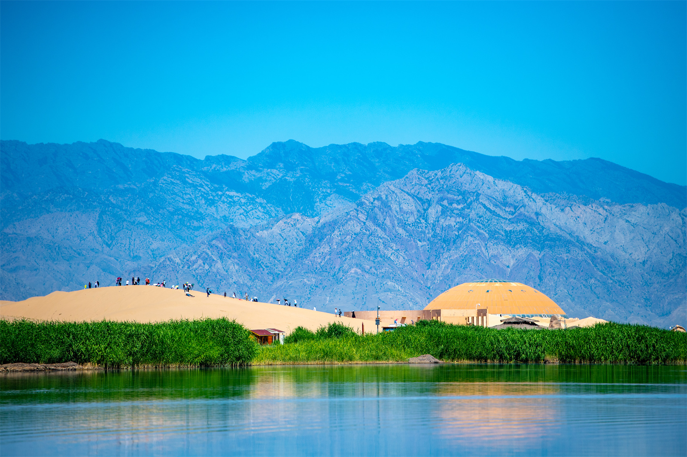
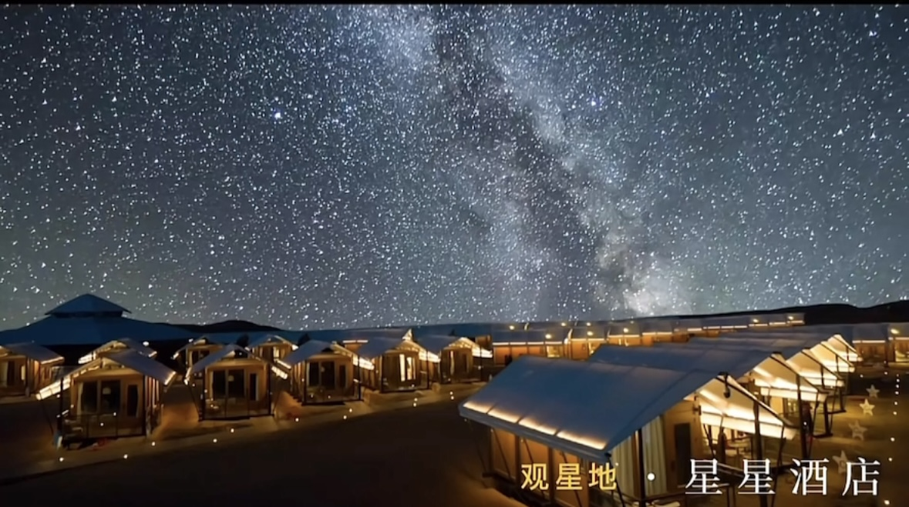
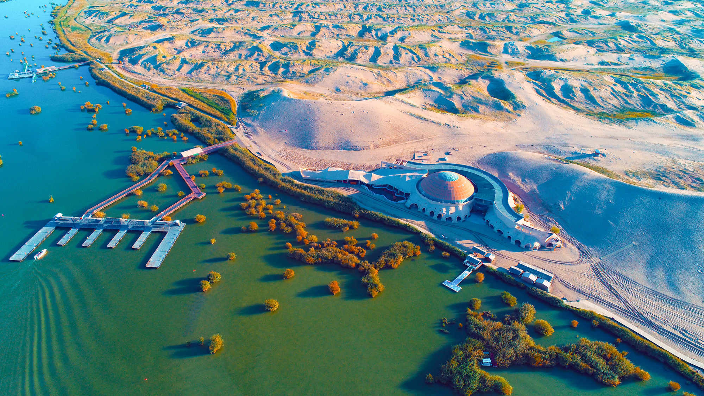
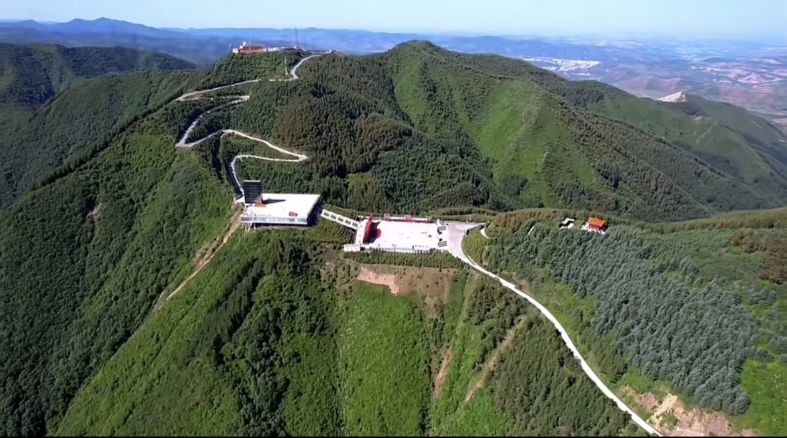
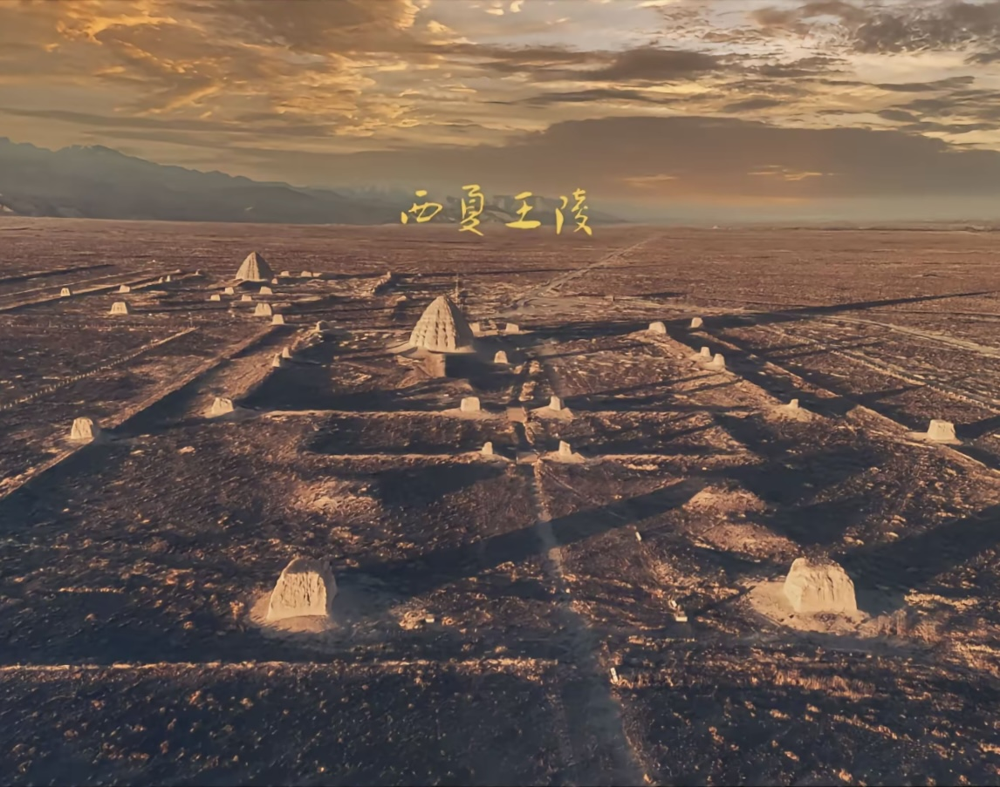

沙坡头
沙坡头景区位于腾格里沙漠东南边缘，为国家AAAAA级旅游景。沙坡头集沙、河、山、园为一体，
飞越黄河、沙漠探险、沙漠冲浪、滑沙、黄河漂流是沙坡头的五大精品旅游项目。
沙坡头景区被中央电视台《体验中国》栏目评为“全国十大最好玩的地方”，
被中央电视台以及大众网络评为“中国最值得外国人去的50个地方之一”，享有“中国沙漠旅游基地”的美誉。

星星酒店
宁夏被称为“星星的故乡”，这一美誉源于其得天独厚的自然条件和优越的观星环境。
星星酒店的地理环境和气候条件极为适宜观星，特别是冬季不严寒、夏季无酷暑、春秋季节气候宜人，
为观星提供了极佳的自然背景。宁夏的气象部门还进行了观星气候适宜度评估，
综合考虑了云量、光污染、能见度、大气视宁度、人体舒适度等多个因素对观星的影响，
并通过科学的算法和数据验证了宁夏观星的适宜性。

沙湖生态旅游区
宁夏沙湖生态旅游区是一处融合江南水乡之灵秀与塞北大漠之雄浑为一体的“丝路驿站”上的旅游明珠。
这里的对比是强烈的，大漠金沙、黄土丘陵，水乡绿稻、林翠花红，在这里不仅都可以领略到，而且你还会惊奇地发现，
这两种不同的景色，融合的竟是那么巧妙，交织出一幅“塞上江南美好画”的五彩画卷。

六盘山
六盘山上高峰，红旗漫卷西风。六盘山景区位于宁夏、甘肃、陕西交界地带，是西北地区重要水源涵养林基地和自治区风景名胜区，
总面积6．78万公顷，横跨宁夏泾源、隆德、原州区两县一区，森林覆盖率达到70%以上。历来有"春去秋来无盛夏"之说，主峰米缸山海拔2942米，
登上主峰远眺，朝雾迷漫，云海苍茫，日出云开，只见重峦叠嶂，层出不穷。

西夏王陵
西夏王陵又称西夏帝陵、西夏皇陵，是西夏历代帝王陵以及皇家陵墓。
王陵位于宁夏银川市西，西傍贺兰山，东临银川平原，海拔1130米至1200米之间，
是中国现存规模最大、地面遗址最完整的帝王陵园之一，也是现存规模最大的一处。
西夏文化遗址西夏王陵营建年代约自11世纪初至13世纪初，由于受到佛教建筑的影响，
加之汉族文化、佛教文化、党项族文化的有机结合，构成了我国陵园建筑中别具一格的形式。